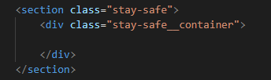
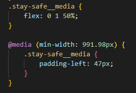
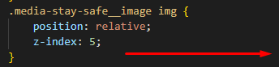

Секция-2
Назовем эту секцию "Stay safe", по названию заголовка.

Создание структуры
Итак, новый блок stay-safe. Дальше, используем сниппет "cnt" <div class="имя блока__container> и создаем ограничивающий контейнер
stay-safe__container

Тут у нас изображение и снизу сделана тень. Сразу создадим папку для изображений stay-safe_img. Обозначим наш блок линией. Этот блок белый, а снизу опять серенький
Продолжим дальше анализ. Есть весь блок, есть ограничивающий контейнер. Для изображения нам придется делать какие-то отступы. И разделим наш контейнер линейкой на 2 половинки - 1057 разделим на 2 получим 528 пикселей
Выгрузим картинку. Это у нас растровое изображение, значит делаем "Export" в png. Здесь у нас изображено приложение, поэтому назовем картинку "app".
Верстка, я бы сказал, она не для технарей с творческой жилкой, а она как раз пятьдесят на пятьдесят - половина технические навыки, половина творческие. Потому что, ни один верстальщик не будет зарабатывать много, если он не умеет сделать качественный адаптив, не умеет применить качественную анимацию. А это все требует творчества, требует где-то дизайнерского чутья и так далее.
Это не про сопоставление цветов - это про удобство, про восприятие. Это еще важнее. Вообще, верстка мне с каждым годом все больше и больше нравится. Я понимаю, насколько она важна в процессе разработки сайта. Очень многие ее недооценивают, но они просто не видели подхода, правильного, к верстке. Естественно, еще на это все, нужно помнить про доступность, про семантику.
Все думают, что верстка это что там, что там верстка - ничего особенного. Все зависит от того, как именно вы к этому подходите и какой уровень вы даете.
Итак, контейнер мы создали и тут у нас две половинки - изображение и контент
И, вот здесь, та самая БЭМ-магия, о которой все говорят. У нас здесь контентный блок. Мы его, практически, сверстали. Сейчас происходит молниеносная верстка. В get-started__content мы просто копируем содержимое и вставляем в контентный блок нашей секции, меняем только класс элемента, убираем у заголовка модификатор, который у нас красил в голубой, меняем текст и надпись на кнопке. Тут еще <h1> нужно поменять на <h2>. Потому что <h1> стоит использовать один на странице - самых главных заголовков не может быть много, он должен быть только один
И, у нас готовый полностью блок. Вот она, магия БЭМа. Вот она, магия переиспользования блоков. Вот она, магия переиспользования кода. Всего несколько секунд потребовалось. Так что, обязательно используйте переиспользование кода, обязательно используйте методологию

Блок stay-safe__media - добавим ему еще один класс media-stay-safe, По этому классу создадим блок с элементом __image для работы с картинкой и поместим саму картинку
Стилизация
Картинка
Движемся дальше и, собственно, пойдем сверстаем этот блок. Для этого выделяем его полностью, затем Ctrl+Shift+X и переносим классы в css. Все что касается block-text нам не нужно - оно уже сверстано. media опустим ниже - здесь изображение мы будем отдельно верстать.
У нас есть отступ до изображения 135 пикселей сверху и 106 снизу. Сразу подумаем, как поступить с блоками декора вокруг картинки. Есть смысл сделать это следующим образом - я создаю объект визуально, построю коробочку из линий и уже внутри неё буду размещать все элементы
Сверху и снизу отступы по 80 пикселей
По картинке - я все-таки уберу тень, она мне мешает, и выгружу картинку без тени. В Фигме в эффектах в дизайне можно выделить блок у которого, есть тень и скрыть, нажав на глазик. Имейте это ввиду. Картинка по умолчанию выгружается с тенью, это нам не надо - тень мы добавим самостоятельно. Теперь картинка у нас своих собственных размеров. Именно так нужно делать
Едем дальше. stay-safe__container - делаем флекс-блок, чтобы разместить объекты в горизонтали и второе свойство - по центру вертикали . stay-safe__media - половина ширины флекс-бокса, stay-safe__content - тоже половина ширины флекс-бокса

И, теперь весь блок изображения с декором - я хочу померить его общую ширину. Получается 373 пикселя. Задаем ширину для media-stay-safe
Дальше, в главном медиа-блоке stay-safe__media выставим его по центру. И сам блок сделаем строчно-блочным и зададим относительное позиционирование

Врядли получится провернуть этот фокус, потому что по макету он не по центру, а просто отступает. Придется вытащить из stay-safe__media класс media-stay-safe и сделать из него отдельный объект.
И уберем заданные свойства - центровку и строчно-блочные свойства. Оставляем только относительное позиционирование
Здесь у нас левый отступ 47 пикселей. Так и запишем. И уже внутри блока мы центруем изображение
Дальше, можем сразу на картинку навешать тень. Сначала откроем "глазик", чтобы включить ее и скопируем значение. А также перенесем закругление углов
Тень сейчас применилась ко всему блоку
Поэтому, присвоим блоку строчно-блочные свойства, чтобы объект не занимал всю ширину, а был по ширине картинки
Нижний, полупрозрачный декор
Отступы от вернего края декора до изображения - 56 пикселей, от нижнего - 27.

Приступим непосредственно к декору. У нас четыре декоративных элемента
Четвертый, полупрозрачный, объект декора мы добавим к самому изображению. Для самого изображения мы добавим свойства через псевдокласс media-stay-safe__image::after

И теперь сверстаем этот объект
Объект получился, но расположен далеко слева от картинки, в отличии от макета
Это получается потому, что мы задали объекту абсолютное позиционирование, а конкретного объекта картинки, относительно которого нужно позиционироваться выше в потоке, не задали. Поэтому, зададим относительное позиционирование для media-stay-safe__image
Теперь объект позиционируется относительно картинки, осталось задать координаты, согласно макету. Он отступает слева на 12 пикселей и опускается вниз на 12 пикселей. Теперь декор на месте
Единственное, что осталось - само изображение нужно достать из-под этого объекта z-индексом

Цветной декор
Сам декор мы можем набрасывать просто объектами. Например, вот так. Сразу копируем классы и переносим в css
Есть общий класс, где мы даем общие стили, которые заданы макетом и логикой: позиционирование, цвет фона, радиус закругления
Итак, номер один
Дальше, номер два и номер три. Размеры у них одинаковые, поэтому мы можем задать их ширину и высоту в общем классе, а персонально задать только позиционирование. Также, теперь нам нужно вытащить из-под этих объектов наш четвертый объект декора - присвоим ему z-index и он будет отображаться поверх цветного декора. Для картинки, соответственно, поменяем z-index с 2 на 5
Есть, блок готов - мы разместили декор. Как я и говорил, с этими мелкими штуками, с ними приходится повозиться.
Движемся дальше - займемся адаптивом.
Адаптив
@media (min-width: 991.98px)
На 992 у нас уже появились проблемы - нарушается заголовок, слишком тесно становится блокам контента и изображения.
Рассмотрим, прием min-width для медиа-запросов. Когда мы добавляем что-то, как mobile force, т.е. только на устройствах, которые больше определенного разрешения, вот как здесь я указал, соответственно, у нас отступ пропадет сам по себе и на мобилках будет меньше кода
Изначально, мы указывали левый отступ для блока с изображением в общих настройках. И этот отступ присутствовал на всех расширениях, занимая место и сжимая объекты. Вот, как это выглядело
Теперь же, мы уберем этот отступ из общих настроек и зададим его работу только для разрешений минимум от 992 пикселя и выше. При меньшем разрешении отступ будет пропадать и заголовок будет сохраняться, соответственно, и остальная структура на этом размере сохранится и не будет требовать дополнительных действий. Это, как раз тот случай, когда удобнее провести подобный алгоритм через min-width, а не через max-width. Я выиграл 47 пикселей, в принципе, выглядит все еще сносно.

Подобный макет оценивается долларов в 30-50, если навскидку - тут нечего делать. Ваше восприятие этой цены зависит от того, сколько вы времени на это потратите. Мы сейчас без JS, с выдумываниеим всего, с разговорами тратим не так и много времени на данный макет. В боевом режиме я бы его хлопнул за час-полтора и все. За час-полтора эти деньги очень даже большие.
А для всей секции stay-safe уменьшить верхний и нижний отступ, как раз лучше воспользоваться свойством max-width
@media (max-width: 767.98px)
На 768 контент и изображение мы расположим уже по вертикали
Здесь, опять же, картинка сверху получилась и мне это не нравится. Поэтому, я просто развернул flex-direction на column-reverse.
Таким образом я разворачиваю объекты для того, чтобы текст показать сверху. По моему убеждению, так для восприятия гораздо лучше, когда идет текст, потом картинка. И получается у меня теперь следующим образом, что мне нравится гораздо больше
Дальше, контент. Дадим ему нижний отступ, чтобы отклеить от картинки

И здесь нам нужно поставить ширину, чтобы она влезла в самый маленький телефон: 320 - 30 = 290 пикселей.
Сейчас стоит пробежатся здесь и переделать все на проценты, чтобы было вообще супер. Картинка - расширяется по максимуму

Ширина медиа-блока - 373 пикселя. Сама картинка по макету имеет ширину 229 пикселей. Получается 61.5 %.
И это уменьшение, для самых маленьких телефонов, достаточно сделать не здесь, а уже на разрешении 479,98
Также, можно пробежаться и поуменьшать-переделать на проценты сам декор, но он и так нормально выглядит, а времени мы потратим на него достаточно, поэтому я оставлю его, как есть. Но, прием с привязкой всех размеров к размеру блока - это хороший прием. Обратите на него внимание.
В итоге, текст сверху, картинка снизу, адаптив работает - мне все очень нравится. Двигаемся дальше к следующей секции.